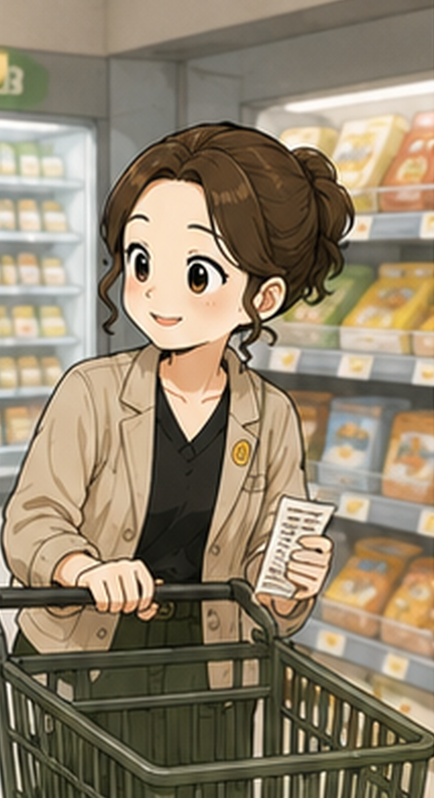
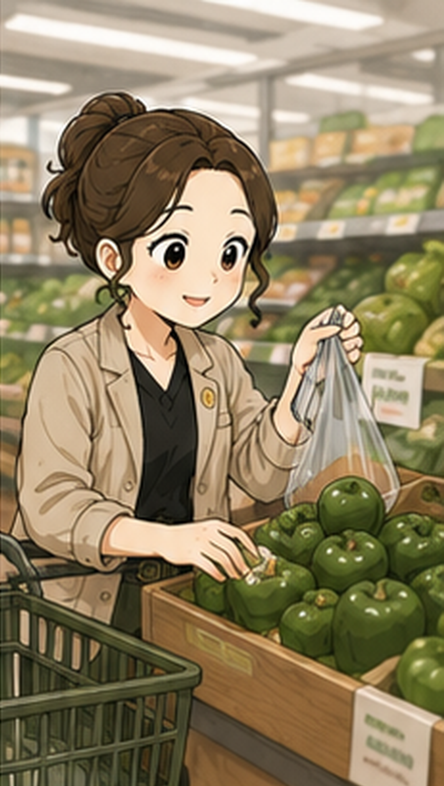

요즘 마트에 가면 물가가 정말 많이 올랐다는 것을 실감하게 됩니다. 밖에서 외식 한 번 하려고 해도 부담스러운 가격에 망설여지곤 하죠. 이럴 때일수록 우리 가족의 건강도 챙기고 가계부도 다이어트할 수 있는 최고의 방법은 바로 '집밥'입니다.
오늘은 꼼꼼한 주부들이 실천하고 있는 집밥을 통한 확실한 식비 절약 노하우를 공유해 볼까 합니다.
1. 일주일 식단표 작성은 필수
식비를 줄이는 첫걸음은 체계적인 계획에서 시작됩니다. 냉장고에 어떤 재료가 남아있는지 먼저 확인한 후, 그 재료들을 활용할 수 있는 '일주일 식단표'를 짜보세요.
- 장보기 리스트 작성: 식단표에 맞춰 꼭 필요한 식재료만 적어서 장을 봅니다.
- 충동구매 방지: 마트에 가서 불필요한 간식이나 세일 상품을 충동적으로 담는 것을 막아줍니다.

2. 냉파(냉장고 파먹기)의 생활화
자투리 채소나 애매하게 남은 식재료들은 자칫하면 상해서 버리기 십상입니다.
- 주 1회는 무조건 '냉파 데이'를 정해 남은 재료로 볶음밥, 카레, 비빔밥 등을 만들어 보세요.
- 식재료 낭비를 줄이는 것만으로도 한 달 식비를 크게 절약할 수 있습니다.
3. 대량 조리와 소분 보관의 마법
국이나 찌개, 밑반찬은 한 번에 넉넉히 만들어 소분해 두면 아주 편리합니다.
- 시간과 가스비 절약: 매번 요리하는 번거로움과 에너지를 줄일 수 있습니다.
- 냉동 보관 활용: 파, 마늘, 고추 등 자주 쓰는 채소는 다지거나 썰어서 냉동해두면 상해서 버리는 일 없이 끝까지 먹을 수 있습니다.
4. 외식 대체 메뉴 만들기
치킨, 피자, 떡볶이 등 배달 음식의 유혹이 찾아올 때를 대비해 집에서 간단히 해 먹을 수 있는 대체 식품(밀키트, 냉동식품 등)이나 레시피를 준비해두세요.
- 외식이나 배달 한 번 할 돈으로 일주일 치 식재료를 살 수 있다는 사실을 꼭 기억하세요!
5. 건강은 최고의 덤!
집에서 밥을 해 먹으면 조미료 사용을 줄이고 신선한 재료를 듬뿍 넣을 수 있어 가족들의 건강까지 챙길 수 있습니다. 외식이나 배달 음식에 길들여진 입맛을 되찾고, 나아가 병원비까지 절약하는 장기적인 재테크가 됩니다.

처음에는 매일 밥을 차리는 것이 귀찮고 힘들게 느껴질 수 있습니다. 하지만 식비가 눈에 띄게 줄어드는 가계부를 보면 그 어느 때보다 큰 성취감을 느낄 수 있을 거예요.
오늘 저녁은 냉장고에 있는 재료들로 맛있는 집밥 한 끼, 어떠신가요? 꼼꼼한 주부의 똑소리 나는 집밥 생활을 응원합니다!